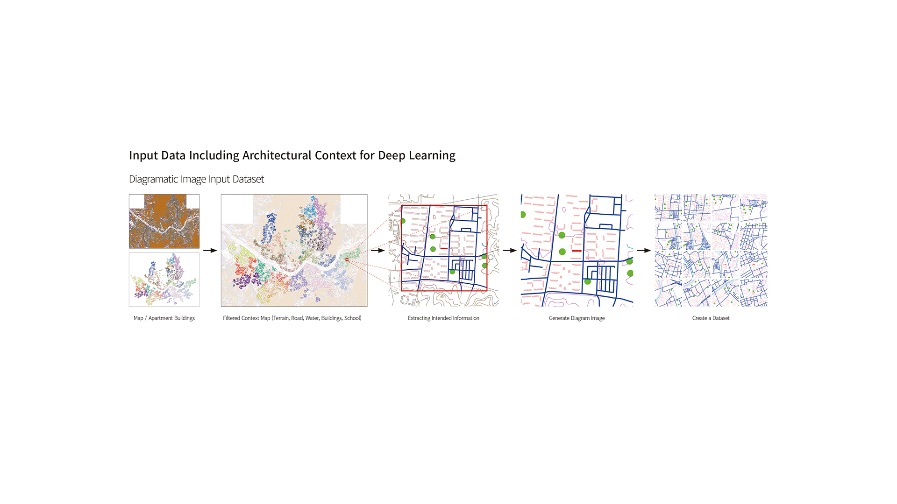
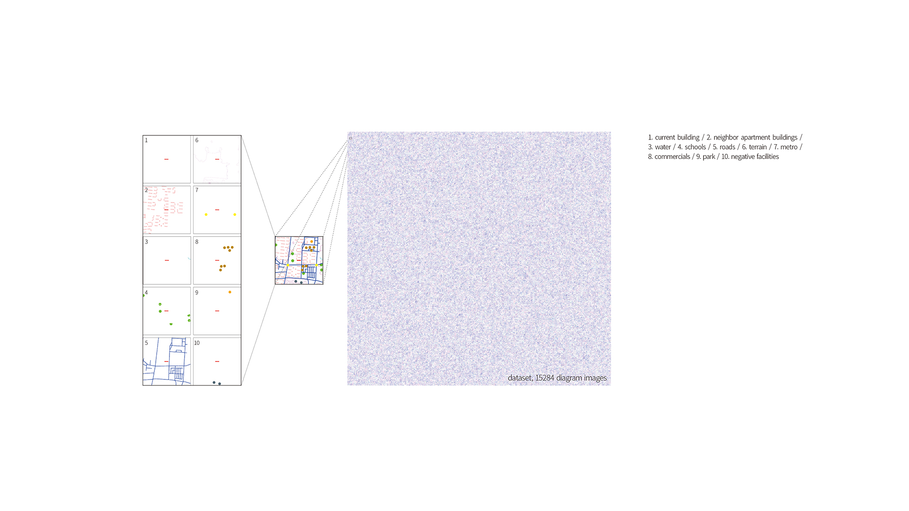
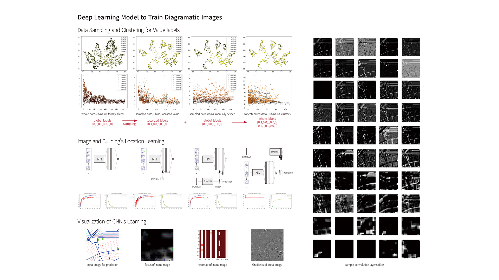

Investigating Implicit Patterns of Design Principles with Deep Learning.
An apartment complex in South Korea is a group of apartment buildings in the form of collective housing. To prevent the negative impact of large and dense occupations on many sectors of the city, the South Korean government provides rigid zoning regulations for these complexes. Designing a complex is similar to applying variations on a prototype in that the designers should address the limits imposed by the regulations and respond to the site conditions to add value. Over the last half-century, the city of Seoul has been the site for prototyping and developing variations of the complexes. According to the definition of the price, we can translate the price of an apartment building in a complex as a co-positive phenomenon of various factors based on economic, social, and cultural aspects. Therefore, it is difficult to investigate the effect of design alone on apartment prices and few explicit relationships between their design and prices. However, to improve the design of new apartment complexes designers need to learn these embedded principles and how they affect the value of the respective complexes. In our research, we opted for a learning-based system to investigate these implicit patterns from the apartment complex design and its price.
As a designer, we can analyze visual media and recognize the recurring design patterns of the complexes. However, due to a large amount of information and the great level of complexity, the relationship between patterns and price is hard to be captured by designers. In contrast, deep learning techniques are well-suited for an inquiry into large databases and to learn about these relationships meaningfully. For learning the design principles of apartment complexes with machine learning, two tasks must be preceded: producing a proper dataset and framing the machine learning task. In this research, we opted to synthesize our dataset of diagrammatic images instead of using satellite images. The object and scope of the diagrammatic image dataset is apartment buildings in Seoul for two reasons: an abundance of various examples; and secondly, as the dominant architectural typology of the city. Using diagrammatic images has advantages in two respects. First there is reduction of noise – a diagrammatic image can show the desired relationships in isolation without other irrelevant information. The second is customization – with a diagrammatic image dataset, designers can specify precisely what they wish to analyze by including just the elements they wish to focus on.

In order to generate the diagrammatic image dataset, we collected GIS data from the Korean government, which includes the building footprints, center lines of road systems and waterways, contour lines of terrains, location of educational facilities. In addition, we extracted the latitude and longitude information from building footprints. This information is saved as another input data matching with diagrammatic image dataset. We developed customized Grasshopper components to set the image size and range, assign the diagram drawing style, and automatically generate the images of the apartment buildings within their complexes. Both global and local aspects are necessary to investigate the relationship between price and design principles. To distinguish global and local aspects we used location information, longitude and latitude, and normalized values of the buildings in the same complex. According to the location in the city, the price range of the buildings belonging to an apartment complex is determined. However, in the same complex, prices are differentiated according to local factors such as location and size of the building.

To find the principles of apartment complex design using machine learning, we framed this task as a multiclass classification. The image of the building in our diagrammatic dataset is the input, and a model tries to classify the respective local and global price in a specific number of bins. After training, the model can predict the price bin for new images. As the base for our models, we adopted Visual Geometry Group 19 (VGG19) which is a deep convolutional network for object recognition developed and trained by University of Oxford. We used five different models (Table 1.) and discretized the predicted values in two different classification settings: four and eight bins.

After successfully training, test images were given to the model in order to visualize focus, heatmap, filters of convolution layers, and gradients. Especially, by visualizing and analyzing the filters of convolution layers, we found that the neural networks keep tracing the pattern of the road systems and the arrangement of buildings. Moreover, the visualized focus of the neural networks shows the bright regions near the road’s geometries on the test images. We can translate that as they are crucial design factors to determine the apartment price. The results show that the machine succeeded in learning patterns from the diagrammatic image dataset. However, the lack of information in the sample image led the model to be confused after the increase in the number of bins. If more information is added to the image, it would increase in accuracy and prevent overfitting. Furthermore, the influence of color and shape remains as ambiguous. Our hypothesis is that the structure and representation of the diagram would affect learning accuracy based on the focus image. For further work, we plan to proceed more experiments on the diagrammatic image composition, color, weight, and shape to investigate how the image structure affects learning. Learning accuracy can be improved by developing certain types of input that combine global and local values. In addition, we would have to generate different image sets from other cities and test their applicability of our method. Although our model succeeded in the classification setting with diagrammatic images, ultimately this research should be framed as a regression problem for more precise relationships between implicit design principles and price.